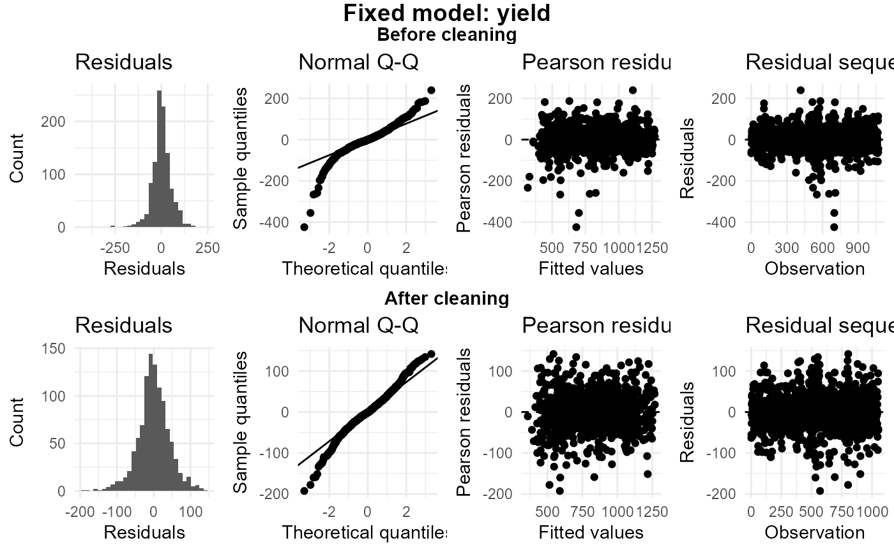
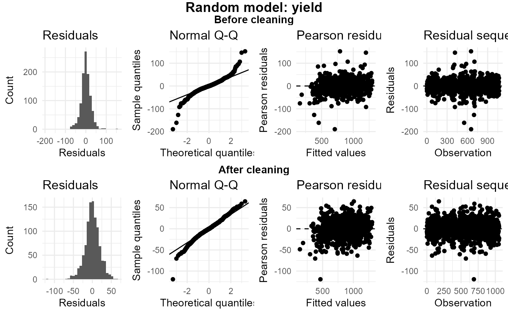

Heritability in plant breeding on a genotype difference basis
Usage
H2cal(
data,
trait,
gen.name,
rep.n,
env.n = 1,
year.n = 1,
env.name = NULL,
year.name = NULL,
fixed.model,
random.model,
summary = FALSE,
emmeans = FALSE,
weights = NULL,
plot_diag = FALSE,
outliers.rm = FALSE,
trial = NULL
)Arguments
- data
Experimental design data frame with the factors and traits.
- trait
Name of the trait.
- gen.name
Name of the genotypes.
- rep.n
Number of replications in the experiment.
- env.n
Number of environments (default = 1). See details.
- year.n
Number of years (default = 1). See details.
- env.name
Name of the environments (default = NULL). See details.
- year.name
Name of the years (default = NULL). See details.
- fixed.model
The fixed effects in the model (BLUEs). See examples.
- random.model
The random effects in the model (BLUPs). See examples.
- summary
Print summary from random model (default = FALSE).
- emmeans
Use emmeans for calculate the BLUEs (default = FALSE).
- weights
an optional vector of ‘prior weights’ to be used in the fitting process (default = NULL).
- plot_diag
Show diagnostic plots using ggplot2 and cowplot (default = FALSE).
- outliers.rm
Remove outliers (default = FALSE). See references.
- trial
Column with the name of the trial in the results (default = NULL).
Details
The function allows to made the calculation for individual or multi-environmental trials (MET) using fixed and random model.
The variance components based in the random model and the population summary information based in the fixed model (BLUEs).
Heritability under three approaches: Standard (ANOVA), Cullis (BLUPs) and Piepho (BLUEs).
Best Linear Unbiased Estimators (BLUEs), fixed effect.
Best Linear Unbiased Predictors (BLUPs), random effect.
Table with the outliers removed for each model.
For individual experiments is necessary provide the {trait},
{gen.name}, {rep.n}.
For MET experiments you should {env.n} and {env.name} and/or
{year.n} and {year.name} according your experiment.
The BLUEs calculation based in the pairwise comparison could be time
consuming with the increase of the number of the genotypes. You can specify
{emmeans = FALSE} and the calculate of the BLUEs will be faster.
If {emmeans = FALSE} you should change 1 by 0 in the fixed model for
exclude the intersect in the analysis and get all the genotypes BLUEs.
Diagnostic plots are produced with ggplot2 and assembled with cowplot.
If {outliers.rm = FALSE}, fixed and random model diagnostics are
displayed in one combined panel. If {outliers.rm = TRUE}, fixed and
random diagnostics are displayed in separate panels comparing before
and after cleaning.
For more information review the references.
References
Bernal Vasquez, Angela Maria, et al. “Outlier Detection Methods for Generalized Lattices: A Case Study on the Transition from ANOVA to REML.” Theoretical and Applied Genetics, vol. 129, no. 4, Apr. 2016.
Buntaran, H., Piepho, H., Schmidt, P., Ryden, J., Halling, M., and Forkman, J. (2020). Cross validation of stagewise mixed model analysis of Swedish variety trials with winter wheat and spring barley. Crop Science, 60(5).
Schmidt, P., J. Hartung, J. Bennewitz, and H.P. Piepho. 2019. Heritability in Plant Breeding on a Genotype Difference Basis. Genetics 212(4).
Schmidt, P., J. Hartung, J. Rath, and H.P. Piepho. 2019. Estimating Broad Sense Heritability with Unbalanced Data from Agricultural Cultivar Trials. Crop Science 59(2).
Tanaka, E., and Hui, F. K. C. (2019). Symbolic Formulae for Linear Mixed Models. In H. Nguyen (Ed.), Statistics and Data Science. Springer.
Zystro, J., Colley, M., and Dawson, J. (2018). Alternative Experimental Designs for Plant Breeding. In Plant Breeding Reviews. John Wiley and Sons, Ltd.
Examples
library(inti)
md <- met %>%
H2cal(trait = "yield",
gen.name = "cultivar",
rep.n = 2,
env.name = "env",
env.n = 18,
fixed.model = ~ 0 + env + (1 | env:rep:alpha) + cultivar,
random.model = ~ 1 + env +
(1 | env:rep) + (1 | env:rep:alpha) +
(1 | cultivar:env) + (1 | cultivar),
summary = TRUE,
plot_diag = TRUE,
outliers.rm = TRUE,
emmeans = FALSE
)
#> Linear mixed model fit by REML ['lmerMod']
#> Formula: yield ~ 1 + env + (1 | env:rep) + (1 | env:rep:alpha) + (1 |
#> cultivar:env) + (1 | cultivar)
#> Data: dt.rm
#> Weights: weights
#>
#> REML criterion at convergence: 11329.1
#>
#> Scaled residuals:
#> Min 1Q Median 3Q Max
#> -4.0239 -0.3641 0.0002 0.3969 2.1831
#>
#> Random effects:
#> Groups Name Variance Std.Dev.
#> cultivar:env (Intercept) 2107.0 45.90
#> env:rep:alpha (Intercept) 1030.8 32.11
#> env:rep (Intercept) 382.4 19.55
#> cultivar (Intercept) 712.1 26.69
#> Residual 880.4 29.67
#> Number of obs: 1055, groups:
#> cultivar:env, 536; env:rep:alpha, 251; env:rep, 36; cultivar, 30
#>
#> Fixed effects:
#> Estimate Std. Error t value
#> (Intercept) 1066.29 19.26 55.355
#> envmiddle_07bm28_2016 -358.80 26.29 -13.648
#> envmiddle_07bm29_2016 -613.09 26.46 -23.168
#> envmiddle_07bm32_2016 -12.32 26.64 -0.462
#> envmiddle_07bm36_2016 -431.05 26.64 -16.183
#> envmiddle_07bm37_2016 -515.39 26.64 -19.348
#> envmiddle_07bm39_2016 144.85 26.64 5.438
#> envnorth_07bm25_2016 -439.09 26.29 -16.703
#> envnorth_07bm26_2016 -47.97 26.32 -1.823
#> envnorth_07bm38_2016 -105.29 26.64 -3.953
#> envnorth_07bm40_2016 -276.36 26.64 -10.376
#> envnorth_07bm41_2016 -138.43 26.66 -5.192
#> envsouth_07bm20_2016 -218.75 26.31 -8.314
#> envsouth_07bm21_2016 31.50 26.32 1.197
#> envsouth_07bm22_2016 -167.38 26.29 -6.367
#> envsouth_07bm23_2016 -140.88 26.31 -5.355
#> envsouth_07bm30_2016 -421.47 26.72 -15.775
#> envsouth_07bm35_2016 -233.93 26.73 -8.751
#>
#> Correlation matrix not shown by default, as p = 18 > 12.
#> Use print(g.ran.sum, correlation=TRUE) or
#> vcov(g.ran.sum) if you need it


md$tabsmr
#> # A tibble: 1 × 18
#> trait rep geno env year mean std min max V.g V.gxl V.gxlxy
#> <chr> <dbl> <dbl> <dbl> <dbl> <dbl> <dbl> <dbl> <dbl> <dbl> <dbl> <dbl>
#> 1 yield 2 30 18 1 50.5 25.8 -15.5 106. 712. 2107. 0
#> # ℹ 6 more variables: V.e <dbl>, V.p <dbl>, repeatability <dbl>, H2.s <dbl>,
#> # H2.p <dbl>, H2.c <dbl>
md$blues
#> # A tibble: 29 × 3
#> cultivar yield smith.w
#> <chr> <dbl> <dbl>
#> 1 23286 29.8 0.0126
#> 2 23524 -15.5 0.0129
#> 3 24054 62.3 0.0126
#> 4 24521 75.2 0.0126
#> 5 24984 52.9 0.0126
#> 6 25512 37.5 0.0131
#> 7 25965 30.4 0.0126
#> 8 26362 34.7 0.0120
#> 9 26742 58.0 0.0129
#> 10 26777 34.1 0.0124
#> # ℹ 19 more rows
md$blups
#> # A tibble: 30 × 2
#> cultivar yield
#> <chr> <dbl>
#> 1 22455 1027.
#> 2 23286 1048.
#> 3 23524 1017.
#> 4 24054 1076.
#> 5 24521 1088.
#> 6 24984 1073.
#> 7 25512 1061.
#> 8 25965 1055.
#> 9 26362 1054.
#> 10 26742 1075.
#> # ℹ 20 more rows
md$outliers
#> $fixed
#> index env rep alpha cultivar yield resi res_MAD
#> 108 108 south_07bm21_2016 2 1 27609 1177.4254 175.7415 4.558418
#> 376 378 middle_07bm27_2016 2 7 26362 875.4764 -160.2806 -4.157392
#> 416 418 middle_07bm27_2016 2 8 28950 1345.2563 239.2646 6.206094
#> 486 488 middle_07bm29_2016 2 7 24054 236.6704 -196.0316 -5.084709
#> 515 521 middle_07bm29_2016 1 7 27599 626.0585 181.9093 4.718400
#> 520 527 middle_07bm29_2016 1 7 27609 83.1913 -233.4284 -6.054713
#> 521 528 middle_07bm29_2016 2 6 27609 149.2549 -179.7321 -4.661929
#> 552 561 south_07bm30_2016 1 3 26777 294.0247 -266.3388 -6.908350
#> 578 587 south_07bm30_2016 1 3 27609 309.0891 -181.2963 -4.702502
#> 582 591 south_07bm30_2016 1 3 28128 815.9065 186.9957 4.850334
#> 588 597 south_07bm30_2016 1 6 28950 551.0540 -163.0237 -4.228543
#> 589 598 south_07bm30_2016 2 2 28950 366.6649 -197.0120 -5.110139
#> 655 664 south_07bm35_2016 2 2 23286 519.1671 -262.8217 -6.817124
#> 698 707 south_07bm35_2016 1 4 27609 256.9020 -424.3367 -11.006533
#> 699 708 south_07bm35_2016 2 5 27609 345.2121 -355.3906 -9.218194
#> 704 713 south_07bm35_2016 1 6 28209 1018.5923 180.8066 4.689800
#> 708 717 south_07bm35_2016 1 2 28950 568.7687 -258.2803 -6.699327
#> rawp.BHStud adjp bholm out_flag
#> 108 5.154036e-06 5.154036e-06 5.437508e-03 OUTLIER
#> 376 3.219018e-05 3.219018e-05 3.389626e-02 OUTLIER
#> 416 5.431779e-10 5.431779e-10 5.779413e-07 OUTLIER
#> 486 3.681896e-07 3.681896e-07 3.906492e-04 OUTLIER
#> 515 2.377069e-06 2.377069e-06 2.517316e-03 OUTLIER
#> 520 1.406685e-09 1.406685e-09 1.495306e-06 OUTLIER
#> 521 3.132588e-06 3.132588e-06 3.308013e-03 OUTLIER
#> 552 4.903189e-12 4.903189e-12 5.231703e-09 OUTLIER
#> 578 2.569931e-06 2.569931e-06 2.718987e-03 OUTLIER
#> 582 1.232538e-06 1.232538e-06 1.306491e-03 OUTLIER
#> 588 2.352101e-05 2.352101e-05 2.479114e-02 OUTLIER
#> 589 3.219225e-07 3.219225e-07 3.418817e-04 OUTLIER
#> 655 9.288126e-12 9.288126e-12 9.901142e-09 OUTLIER
#> 698 0.000000e+00 0.000000e+00 0.000000e+00 OUTLIER
#> 699 0.000000e+00 0.000000e+00 0.000000e+00 OUTLIER
#> 704 2.734723e-06 2.734723e-06 2.890603e-03 OUTLIER
#> 708 2.093814e-11 2.093814e-11 2.229912e-08 OUTLIER
#>
#> $random
#> index env rep alpha cultivar yield resi res_MAD
#> 387 389 middle_07bm27_2016 1 5 27543 1225.2806 78.79465 4.089582
#> 392 394 middle_07bm27_2016 2 3 27548 1204.8185 85.86587 4.456591
#> 407 409 middle_07bm27_2016 1 6 27669 1273.3470 93.39383 4.847305
#> 415 417 middle_07bm27_2016 1 5 28950 1108.5987 -92.21395 -4.786067
#> 416 418 middle_07bm27_2016 2 8 28950 1345.2563 146.18893 7.587465
#> 515 521 middle_07bm29_2016 1 7 27599 626.0585 88.56392 4.596624
#> 552 561 south_07bm30_2016 1 3 26777 294.0247 -161.53662 -8.384037
#> 553 562 south_07bm30_2016 2 2 26777 529.5605 85.30100 4.427273
#> 582 591 south_07bm30_2016 1 3 28128 815.9065 96.78572 5.023350
#> 654 663 south_07bm35_2016 1 1 23286 942.9373 152.02098 7.890158
#> 655 664 south_07bm35_2016 2 2 23286 519.1671 -189.68244 -9.844855
#> 698 707 south_07bm35_2016 1 4 27609 256.9020 -127.00325 -6.591694
#> 704 713 south_07bm35_2016 1 6 28209 1018.5923 106.56969 5.531156
#> 708 717 south_07bm35_2016 1 2 28950 568.7687 -88.59804 -4.598395
#> rawp.BHStud adjp bholm out_flag
#> 387 4.321510e-05 4.321510e-05 4.563515e-02 OUTLIER
#> 392 8.327338e-06 8.327338e-06 8.810324e-03 OUTLIER
#> 407 1.251498e-06 1.251498e-06 1.329091e-03 OUTLIER
#> 415 1.700810e-06 1.700810e-06 1.804559e-03 OUTLIER
#> 416 3.264056e-14 3.264056e-14 3.479483e-11 OUTLIER
#> 515 4.293904e-06 4.293904e-06 4.547245e-03 OUTLIER
#> 552 0.000000e+00 0.000000e+00 0.000000e+00 OUTLIER
#> 553 9.543189e-06 9.543189e-06 1.008715e-02 OUTLIER
#> 582 5.077786e-07 5.077786e-07 5.397686e-04 OUTLIER
#> 654 3.108624e-15 3.108624e-15 3.316902e-12 OUTLIER
#> 655 0.000000e+00 0.000000e+00 0.000000e+00 OUTLIER
#> 698 4.348366e-11 4.348366e-11 4.631010e-08 OUTLIER
#> 704 3.181277e-08 3.181277e-08 3.384879e-05 OUTLIER
#> 708 4.257577e-06 4.257577e-06 4.513032e-03 OUTLIER
#>